第 2 章 ① 物質三態的特性3 題
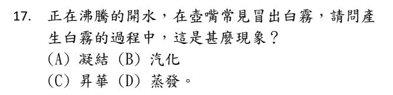
先想清楚：水蒸氣是看不見的。你看得到的白霧，其實是很多很小的水滴。
壺嘴噴出的水蒸氣一碰到冷空氣，就由氣態變回液態 → 這叫凝結。
(B) 汽化是液態變氣態，方向相反。(C) 昇華是固態直接變氣態，這裡沒有固體。(D) 蒸發是汽化的一種，也是液態變氣態。
看到「白霧」「白煙」從熱水冒出來，答案幾乎都是凝結——看得見的一定是小水滴。
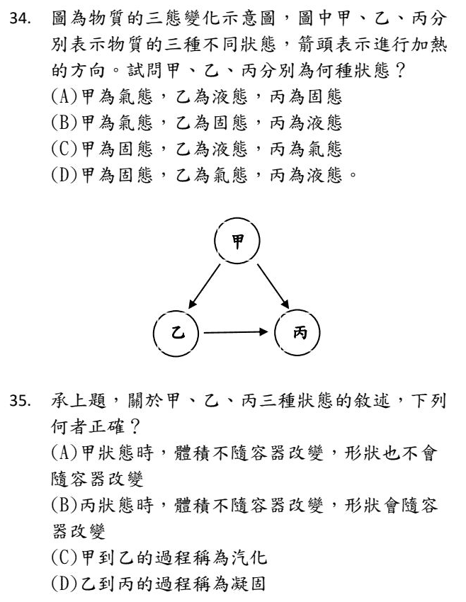
箭頭是加熱的方向，而加熱一定是 固態 → 液態 → 氣態。
甲：只有箭頭出去、沒有箭頭進來 → 最「冷」的狀態 → 固態。
丙：只有箭頭進來 → 最「熱」的狀態 → 氣態。
乙：夾在中間 → 液態。
甲 → 丙 那支箭頭就是固態直接變氣態（昇華）。
(A) 甲是固態：體積固定、形狀也固定，不會隨容器改變 ✓
(B) 丙是氣態：體積和形狀都會隨容器改變。「體積不變、形狀會變」說的是液態。
(C) 甲 → 乙 是固態變液態，叫熔化；汽化是液態變氣態。
(D) 乙 → 丙 是液態變氣態，叫汽化；凝固是液態變固態。
第 2 章 ② 物質的變化8 題
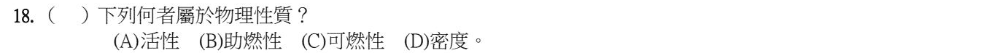
物理性質：不用讓物質變成別的東西，就能觀察或量到——顏色、氣味、密度、熔點、沸點。
化學性質：要在化學變化裡才看得出來——會不會燒（可燃性）、能不能幫忙燃燒（助燃性）、容不容易反應（活性）。
密度用天平和量筒量一量就知道，物質還是原來那個 → 物理性質。
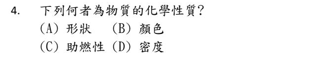
和上一題反過來問。助燃性要真的點火燒燒看才知道，燒完物質就變了 → 化學性質。
(A) 形狀、(B) 顏色、(D) 密度：看一看、量一量就知道，物質沒有改變 → 都是物理性質。
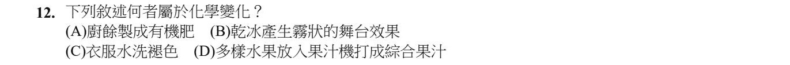
判斷物理／化學變化只問一句：有沒有產生新物質？
(A) 廚餘被微生物分解成肥料，成分完全變了 → 化學變化 ✓
(B) 乾冰昇華成二氧化碳氣體，冷到讓空氣中的水蒸氣凝結成白霧——都只是狀態改變。
(C) 水洗褪色是染料溶到水裡被沖走，染料本身沒變。
(D) 打成果汁只是切碎、混在一起。
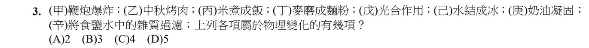
一個一個問「有沒有新物質」：
物理變化：(丁) 麥磨成麵粉（只變形狀）、(己) 水結成冰、(庚) 奶油凝固（三態變化）、(辛) 過濾（只是把東西分開）→ 4 項。
化學變化：(甲) 鞭炮爆炸、(乙) 烤肉、(丙) 米煮成飯、(戊) 光合作用——都產生了新物質，而且回不去了。
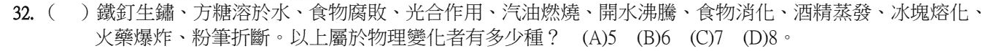
物理變化（沒有新物質）：方糖溶於水、開水沸騰、酒精蒸發、冰塊熔化、粉筆折斷 → 5 種。
化學變化：鐵釘生鏽、食物腐敗、光合作用、汽油燃燒、食物消化、火藥爆炸。
容易猶豫的是「方糖溶於水」：糖只是散開在水裡，把水蒸乾糖就回來了，所以是物理變化。
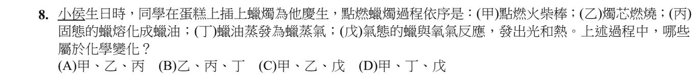
同一根蠟燭，物理變化和化學變化會同時發生。
(甲) 火柴燃燒、(乙) 燭芯燃燒、(戊) 蠟蒸氣和氧氣反應發光發熱 → 燃燒都是化學變化。
(丙) 蠟熔化、(丁) 蠟油蒸發 → 只是三態改變，還是蠟 → 物理變化。
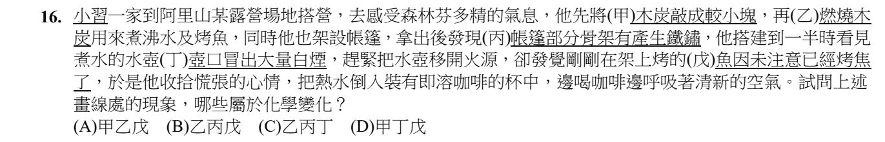
(乙) 燃燒木炭、(丙) 骨架生鐵鏽、(戊) 魚烤焦 → 都產生新物質 → 化學變化。
(甲) 木炭敲碎：只是變小塊，還是木炭。
(丁) 壺口的「白煙」：水蒸氣遇冷凝結成小水滴，是物理變化——它不是真的煙。
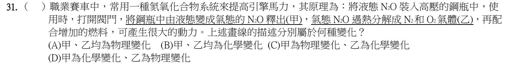
(甲) N₂O 由液態變成氣態：只是三態改變，還是 N₂O → 物理變化。
(乙) N₂O 分解成 N₂ 和 O₂：變成了別的物質 → 化學變化。
化學式改變了，就是有新物質產生。
第 2 章 ③ 純物質與混合物6 題
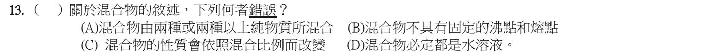
混合物的範圍比你想的大：空氣、合金、泥沙水、牛奶……都是混合物，不一定是水溶液。
(A)(B)(C) 都是混合物的定義和特色：兩種以上物質混合、沒有固定沸點熔點、性質隨比例改變。
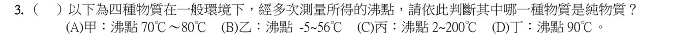
純物質的沸點是固定的一個數字；混合物的成分比例可以不同，沸點會在一個範圍內變動。
甲、乙、丙量了好幾次，沸點都落在一個範圍 → 混合物。只有丁每次都是 90 ℃ → 純物質。
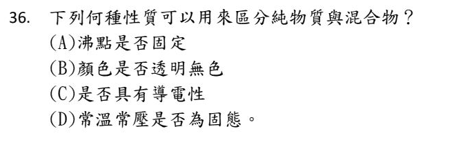
和上一題同一個觀念：沸點（或熔點）固定的是純物質。
(B) 純物質也可以有顏色（例如銅是紅色），混合物也可以透明無色（例如糖水）。
(C) 金屬會導電、食鹽水也會導電，和純不純無關。
(D) 純物質也有氣態、液態的，例如氧氣、水。
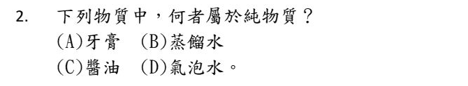
蒸餾水是水加熱成水蒸氣再冷凝收集，只剩下水一種物質 → 純物質。
牙膏、醬油、氣泡水（水 ＋ 二氧化碳 ＋ 其他）都是好幾種東西混在一起 → 混合物。
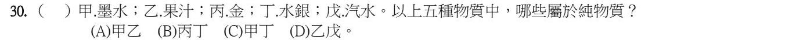
丙 金、丁 水銀（汞）：都只由一種元素組成 → 純物質。
墨水、果汁、汽水：都是很多種成分混合的 → 混合物。
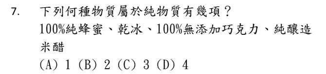
只有乾冰是純物質，它就是固態的二氧化碳。
「100% 純」「無添加」「純釀造」是廣告用語，意思是沒有摻別的東西，不代表只有一種物質：
蜂蜜裡有水和好幾種糖；巧克力裡有可可脂、可可粉等；米醋裡有水、醋酸和其他成分 → 都是混合物。
科學上的「純物質」＝只由一種物質組成，跟商品標籤上的「純」是兩回事。
第 2 章 ④ 混合物的分離1 題
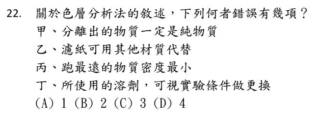
色層分析：混合物的各成分被溶劑帶著在濾紙上跑，跑的速度不同，就會分開。
甲 ✗：跑一樣快的成分會疊在同一個位置，分出來的那一段不一定是純物質。
乙 ✓：濾紙可以換成粉筆、紙巾等其他材質。
丙 ✗：跑多遠是看成分和溶劑、濾紙之間的「拉扯」，和密度無關。
丁 ✓：可以用水，也可以用酒精等其他溶劑。
錯誤的是甲、丙，共 2 項。
第 2 章 ⑤ 溶液的組成2 題
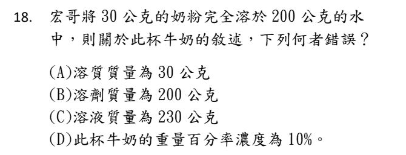
先把三個名字對好：溶質（奶粉）30 g、溶劑（水）200 g、溶液 ＝ 30 ＋ 200 ＝ 230 g。(A)(B)(C) 都對。
(D) 重量百分率濃度 ＝ 溶質 ÷ 溶液 ＝ 30 ÷ 230 × 100% ≈ 13%，不是 10% → 錯。
分母要用溶液 230，不是水 200。
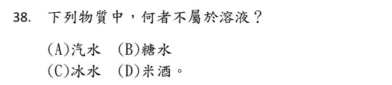
溶液是均勻的混合物：一種東西（溶質）均勻散在另一種東西（溶劑）裡。
冰水 ＝ 冰 ＋ 水，兩個都是 H₂O，只是狀態不同 → 只有一種物質，是純物質，不是溶液。
汽水（二氧化碳溶在水裡）、糖水、米酒（酒精溶在水裡）都是溶液。
第 2 章 ⑦ 溶液的飽和10 題
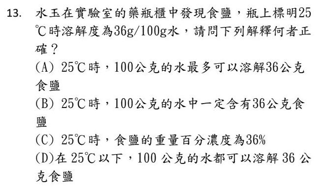
溶解度 36 g／100 g 水的意思：在 25 ℃ 時，100 公克的水最多能溶 36 公克食鹽 → (A) ✓
(B) 是「最多」，不是「一定含有」。只溶 10 克也可以。
(C) 溶解度的分母是水，濃度的分母是溶液。飽和時的濃度 ＝ 36 ÷ (100 ＋ 36) ≈ 26.5%，不是 36%。
(D) 溶解度會隨溫度改變。食鹽溫度愈低溶解度愈小，所以 25 ℃ 以下不一定溶得了 36 克。
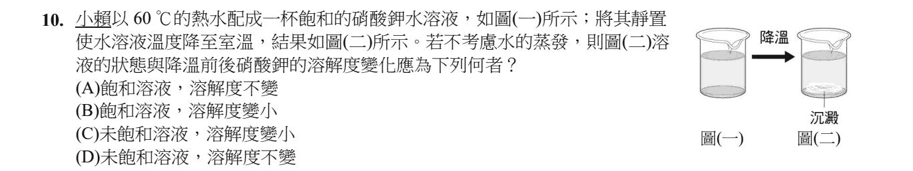
圖(二)杯底有沉澱 → 有溶不下去的硝酸鉀 → 這杯溶液是飽和溶液。所以 (C)(D) 的「未飽和」錯。
為什麼會沉澱？因為硝酸鉀的溶解度溫度愈低愈小，降溫後水溶不下那麼多，多的就析出來 → 溶解度變小。
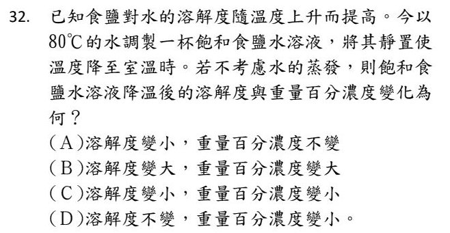
溫度降 → 溶解度變小 → 溶不住的鹽析出結晶 → 留在水裡的溶質變少 → 濃度跟著變小。
關鍵在一句沒寫出來的話：降溫之後它仍然是飽和溶液（杯底有結晶就是證據）。而飽和溶液的濃度是被溶解度綁死的——溶解度動，濃度就一定跟著動。
選 (A) 的想法通常是「水沒少、鹽也還在杯子裡，所以濃度不變」。但析出的結晶已經不算在溶液裡了。
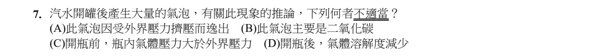
汽水是在高壓下把大量二氧化碳壓進水裡 → 瓶內壓力比外面大 (C) ✓，氣泡主要是二氧化碳 (B) ✓。
開瓶後，瓶內壓力變小，氣體的溶解度跟著變小 (D) ✓，溶不住的二氧化碳就冒出來。
(A) 說「受外界壓力擠壓而逸出」，方向講反了——是因為壓力變小才跑出來，不是被擠出來。
氣體的溶解度：壓力愈大愈容易溶、溫度愈高愈難溶（所以汽水要冰）。
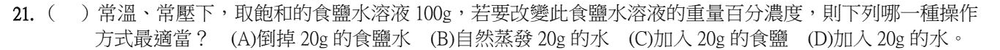
關鍵：這杯已經是飽和食鹽水，濃度已經「頂到天花板」了。
(A) 倒掉一些：溶液是均勻的，剩下的濃度不變。
(B) 蒸發掉水：多出來的鹽會析出，溶液仍然飽和，濃度不變。
(C) 加鹽：已經溶不下了，加的鹽沉在杯底，濃度不變。
(D) 加水：溶液變成未飽和，濃度變小 ✓
溫度不變時，飽和溶液的濃度是固定的。要改變它，只能加水稀釋（或改變溫度）。
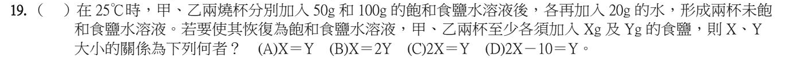
原本的 50 g 和 100 g 都是飽和溶液，裡面的水都已經「吃飽」了。
真正需要補鹽的，只有後來加進去的 20 g 水。兩杯加的水一樣多 → 要補的鹽也一樣多 → X ＝ Y。
原本溶液有多少，在這題是故意放來干擾你的。
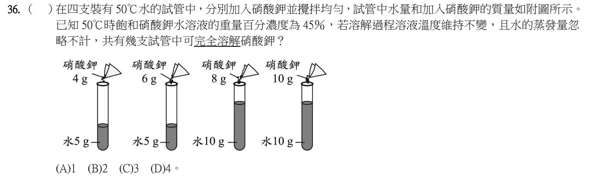
先把 45% 換成「每克水能溶多少」：飽和溶液 100 g 裡有硝酸鉀 45 g、水 55 g → 每 1 g 水最多溶約 0.82 g。
水 5 g：最多溶約 4.1 g → 放 4 g 全溶 ✓、放 6 g 溶不完 ✗
水 10 g：最多溶約 8.2 g → 放 8 g 全溶 ✓、放 10 g 溶不完 ✗
可以完全溶解的有 2 支。
不要直接拿 45% 去乘水的質量——45% 的分母是溶液，不是水。
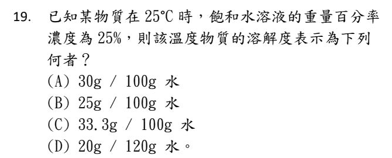
這題就是在叫你把分母換掉：濃度的分母是溶液，溶解度的分母是水。
25% 飽和 → 每 100 g 溶液裡：溶質 25 g、水 75 g。
換算成 100 g 水：25 ÷ 75 × 100 ＝ 33.3 g。
(B) 是把 25% 直接抄成 25 g/100 g 水——等於根本沒換分母。(D) 的分母不是 100 g 水，光形式就不合溶解度的定義。
兩個公式長得很像，差別只在分母。寫下算式前先問自己：我現在的分母是誰？
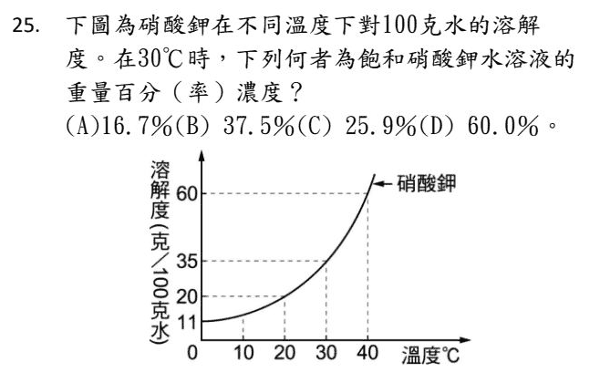
從圖上讀：30 ℃ 時，硝酸鉀的溶解度是 35 g／100 g 水。
飽和溶液：溶質 35 g、溶液 100 ＋ 35 ＝ 135 g → 濃度 ＝ 35 ÷ 135 × 100% ≈ 25.9%。
(A) 16.7% ＝ 20 ÷ 120，是 20 ℃ 的答案。(D) 把 40 ℃ 的 60 直接當成 %，而且分母也沒算。
溶解度 → 濃度：分母要從「100 g 水」換成「100 g 水 ＋ 溶質」。
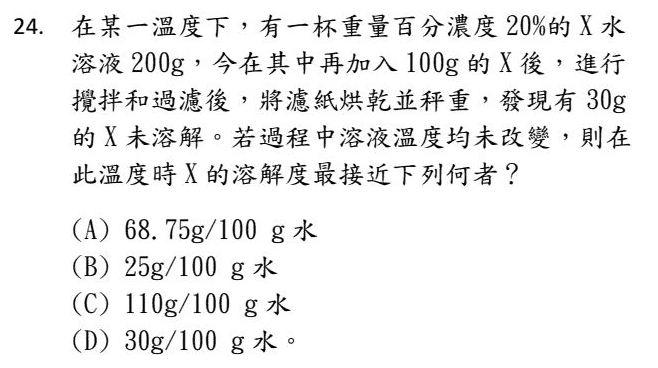
原溶液：溶質 ＝ 200 × 20% ＝ 40 g，水 ＝ 160 g。
再加 100 g，X 共 140 g，未溶 30 g → 溶解了 110 g，而水從頭到尾都是 160 g。
溶解度問的是「每 100 克水能溶多少」→ 110 ÷ 160 × 100 ＝ 68.75。
(C) 110 是直接把溶解量當答案，忘了換算成 100 克水。溶解度是一個比率，不是一個總量。
第 2 章 ⑧ 濃度20 題
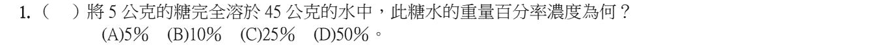
重量百分率濃度 ＝ 溶質 ÷ 溶液 × 100%。
溶液 ＝ 糖 5 g ＋ 水 45 g ＝ 50 g → 5 ÷ 50 × 100% ＝ 10%。
如果寫成 5 ÷ 45，就是把分母錯當成水了。
400 公克是整杯鹽水（溶液）。
鹽 ＝ 400 × 5% ＝ 20 g；水 ＝ 400 − 20 ＝ 380 g。
(B) 把 400 當成水，忘了鹽水裡也包含鹽。
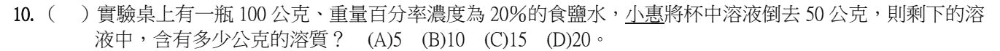
倒掉一部分溶液，濃度不變，還是 20%。
剩下 100 − 50 ＝ 50 g 溶液 → 溶質 ＝ 50 × 20% ＝ 10 g。
(D) 20 g 是原本整瓶的溶質，倒掉一半，溶質也跟著少一半。
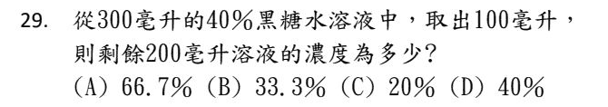
濃度是比值，不是總量。溶液是均勻的，隨便舀一瓢出來，那一瓢和剩下的濃度都還是 40%。
會被騙的人，是把「東西變少了」直接翻譯成「濃度變小了」。
要讓濃度真的改變，只有三條路：加溶質、加溶劑、讓溶劑蒸發。單純倒掉一部分——分子分母同時等比例變少，比值不動。
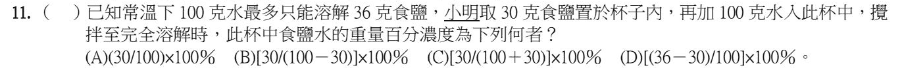
先檢查溶不溶得完：30 g ＜ 36 g → 全部溶掉。
溶液 ＝ 鹽 30 ＋ 水 100 ＝ 130 g → 濃度 ＝ 30 ÷ 130 × 100% → (C)。
(A) 分母寫成水了。(B) 100 − 30 沒有意義。(D) 36 − 30 是「還能再溶幾克」，不是濃度。
重量百分濃度的分母是溶液，裡面一定包含溶質自己。
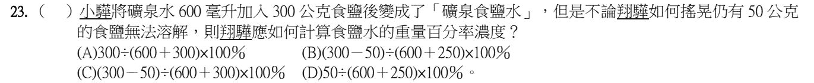
沒溶解的那 50 公克是沉在杯底的固體，它不在溶液裡，所以分子、分母都要把它扣掉。
溶質 ＝ 300 − 50 ＝ 250 g
溶液 ＝ 水 600 g ＋ 溶解的 250 g ＝ 850 g
(C) 的分子扣了、分母卻沒扣——只扣一半是最多人踩的坑。你可以這樣檢查：分母永遠等於「水 ＋ 分子」。
補充：題目給的是礦泉水 600 毫升，這裡用水的密度 1 g/mL 換成 600 公克來算。
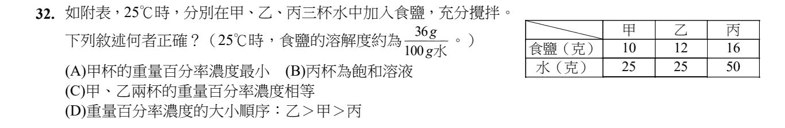
先算每杯水最多能溶多少：溶解度 36 g／100 g 水 → 25 g 水最多溶 9 g，50 g 水最多溶 18 g。
甲：放 10 g，只溶 9 g → 飽和，濃度 9 ÷ 34 ≈ 26.5%
乙：放 12 g，也只溶 9 g → 飽和，濃度 9 ÷ 34 ≈ 26.5%
丙：放 16 g ＜ 18 g，全溶 → 未飽和，濃度 16 ÷ 66 ≈ 24.2%
甲、乙濃度相等 → (C) ✓。(A) 最小的是丙。(B) 丙還沒飽和。(D) 乙和甲一樣大。
沒溶掉、沉在杯底的鹽不算溶質。乙多放的鹽只是多沉一點。
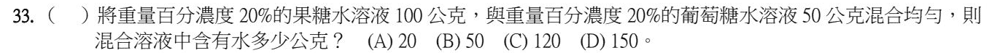
兩杯濃度都是 20%，混合後還是 20% → 水占 80%。
總質量 100 ＋ 50 ＝ 150 g → 水 ＝ 150 × 80% ＝ 120 g。
（分開算也可以：100 × 80% ＋ 50 × 80% ＝ 80 ＋ 40 ＝ 120。）
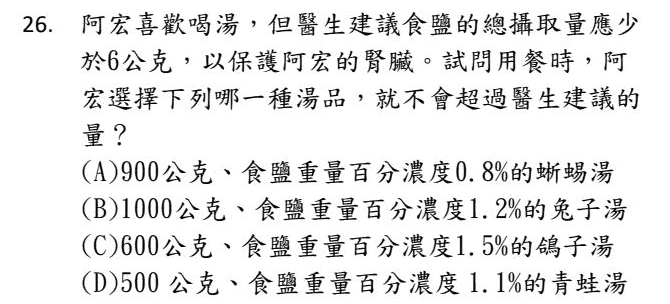
每一碗算出食鹽有幾克：湯的質量 × 濃度。
(A) 900 × 0.8% ＝ 7.2 g
(B) 1000 × 1.2% ＝ 12 g
(C) 600 × 1.5% ＝ 9 g
(D) 500 × 1.1% ＝ 5.5 g ＜ 6 g ✓
濃度最低的 (A) 反而鹽最多——因為湯也最多。要比的是「鹽有幾克」，不是濃度。
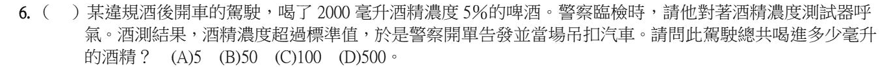
酒精量 ＝ 啤酒體積 × 濃度 ＝ 2000 × 5% ＝ 100 毫升。
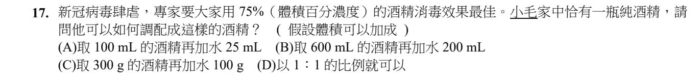
體積百分濃度 ＝ 酒精體積 ÷ 溶液體積 × 100%。
(B) 600 ÷ (600 ＋ 200) ＝ 600 ÷ 800 ＝ 75% ✓
(A) 100 ÷ 125 ＝ 80%。(C) 給的是公克，題目要的是體積百分濃度，單位對不上。(D) 1：1 是 50%。
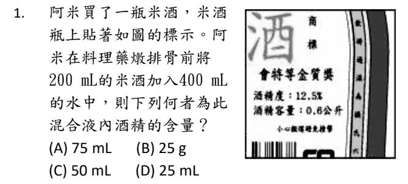
酒精只從米酒來：200 × 12.5% ＝ 25 mL。加水只會把濃度稀釋掉，酒精一滴都沒有多出來。
(A) 75 mL 是把 600 mL 全部當成米酒算的（600 × 12.5%）——等於認為「加水會生出酒精」。
(B) 單位就錯了：體積百分濃度算出來是體積，不是公克。
看到「加水稀釋」四個字，先問一句：溶質的量有變嗎？答案幾乎永遠是「沒有」。
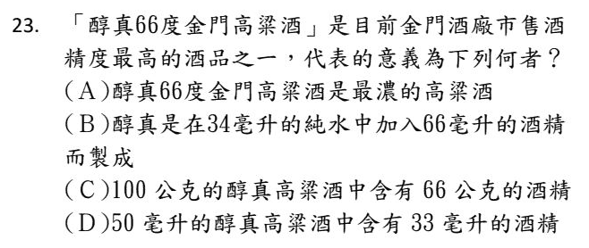
酒的「度」就是體積百分濃度：66 度 ＝ 每 100 毫升酒裡有 66 毫升酒精。
50 毫升 × 66% ＝ 33 毫升 → (D) ✓
(A) 題目只說是「最高的之一」，不能說它就是最濃的。
(B) 66 度是指做好的酒每 100 毫升含 66 毫升酒精；酒精和水混合後體積會略微縮小，不能說成「34 毫升水加 66 毫升酒精」。
(C) 66 度是體積比，不是質量比，不能寫成 100 公克含 66 公克。
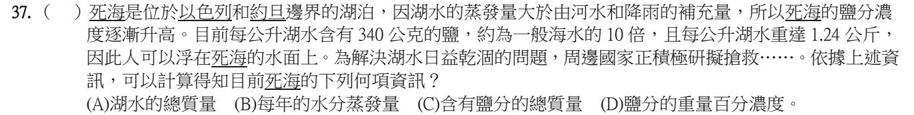
題目給的是每 1 公升的資料：鹽 340 公克、湖水 1.24 公斤 ＝ 1240 公克。
→ 鹽分的重量百分濃度 ＝ 340 ÷ 1240 × 100% ≈ 27.4%，可以算出來 ✓
(A)(C) 要算總量，必須知道整座湖有幾公升，題目沒給。(B) 蒸發量完全沒有數據。
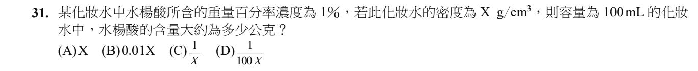
濃度是用質量算的，所以先把 100 mL 換成質量：100 cm³ × X g/cm³ ＝ 100X 公克。
水楊酸 ＝ 100X × 1% ＝ X 公克。
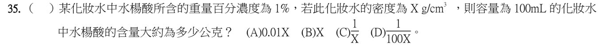
和 112 學年度那一題一模一樣，只是選項順序換了。
化妝水質量 ＝ 100 × X ＝ 100X 公克 → 水楊酸 ＝ 100X × 1% ＝ X 公克 → 這次是 (B)。
考古題要記算法，不要背選項代號。
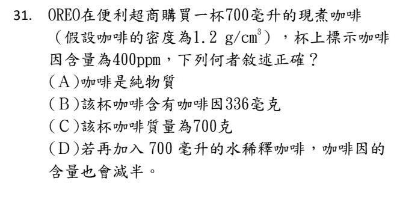
ppm 的分母是質量，所以第一步一定是把毫升換成公克：700 × 1.2 ＝ 840 g（所以 (C) 錯，而且那個密度就是為了這一步給的）。
400 ppm ＝ 每 1 公斤含 400 毫克 → 0.84 kg × 400 ＝ 336 毫克 ✓
(D) 加水稀釋，咖啡因的含量（總毫克數）完全不變——變小的是濃度。而且 840 g 變成 1540 g，也不是剛好兩倍。「含量」和「濃度」是兩個字，段考很愛在這裡換掉。
(A) 咖啡是混合物。
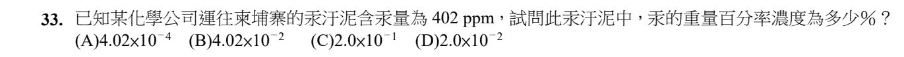
ppm ＝ 百萬分之一。402 ppm ＝ 402 ÷ 1,000,000 ＝ 0.000402。
換成百分率要再 × 100% → 0.0402% ＝ 4.02 × 10⁻² %。
(A) 4.02 × 10⁻⁴ 是還沒乘 100 的比值，不是「%」。
快速換算：1% ＝ 10000 ppm，所以 ppm 換 % 就是除以 10000。
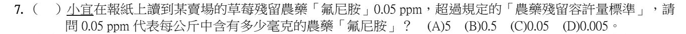
1 公斤 ＝ 1000 公克 ＝ 1,000,000 毫克。
所以 1 ppm ＝ 每公斤含 1 毫克 → 0.05 ppm ＝ 每公斤含 0.05 毫克。
好記的對應：ppm ＝ 毫克／公斤。
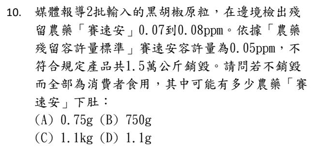
用上一題的對應：1 ppm ＝ 每公斤 1 毫克。
15000 公斤 × 0.07 毫克 ＝ 1050 毫克；15000 × 0.08 ＝ 1200 毫克 → 大約 1.05～1.2 公克 → 約 1.1 g。
(A) 0.75 g 是用「容許量 0.05 ppm」算的，但題目問的是實際檢出的量。(B)(C) 單位換算錯了。
第 2 章 ⑨ 空氣的組成7 題
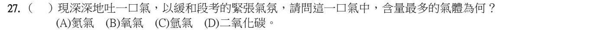
呼出的氣體裡，氧氣少了一些、二氧化碳多了一些，但氮氣身體用不到，吸進去多少就吐出多少。
所以呼出的氣體中，最多的還是氮氣（將近八成）。
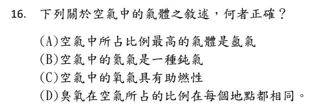
(C) 氧氣能幫助燃燒（助燃性）✓
(A) 空氣中最多的是氮氣（約 78%），氬氣只有約 0.9%。
(B) 氮氣雖然不太活潑，但鈍氣指的是氬氣這一類。
(D) 臭氧的多寡每個地方不一樣，例如高空臭氧層就比較多。
對照比例：甲 78% ＝ 氮氣、乙 21% ＝ 氧氣、丙 0.9% ＝ 氬氣、丁 0.1% ＝ 其他氣體（二氧化碳等好幾種）。
(B) 丁是好幾種氣體加起來 → 混合物 ✓
(A) 焊接時用來隔絕氧氣的是氬氣（丙）。
(C) 不易反應的鈍氣是氬氣（丙），丁不是單一種氣體。
(D) 乙是氧氣，會助燃，線香會燒得更旺，不會熄滅。
大理石 ＋ 鹽酸 → 產生二氧化碳（甲 ✓）。
二氧化碳會使澄清石灰水變混濁（乙 ✓）；無色無臭、不助燃也不可燃（丁 ✓）。
丙 ✗：二氧化碳不助燃，線香放進去會熄滅。讓線香燒得更旺的是氧氣。
汽水裡溶了大量的二氧化碳。
開罐時壓力變小，二氧化碳溶不住就冒出來；加入鹽巴，鹽粒讓溶在水裡的二氧化碳更容易聚成氣泡跑出來。
兩種情況都只是把原本溶在汽水裡的二氧化碳「放出來」，沒有產生氧氣。
（題目表格寫子、丑、寅，選項問甲、乙、丙，指的是同樣三瓶，依序對應。）
子：不助燃、難溶於水、石灰水無反應 → 氮氣。
丑：會使石灰水混濁、微溶於水 → 二氧化碳。
寅：有助燃性 → 氧氣。
三種氣體各有一個「招牌」：氧氣助燃、二氧化碳使石灰水混濁、氮氣兩個都沒有。
這是用雙氧水和二氧化錳製氧的裝置。
(A) 乙瓶底的黑色固體是二氧化錳 ✓。(B) 先加水把甲的下端泡在液體裡，氧氣才不會從甲跑掉 ✓。(C) 一開始冒出來的是瓶子裡原本的空氣，不要收集 ✓。
(D) ✗：把甲拔開，氧氣會從瓶口跑掉，液體也可能噴出來。反應太快應該減慢或暫停加入雙氧水。
第 2 章 ⑩ 空氣品質與水資源1 題
丙（一滴水用兩次以上）、丁（雨水拿來洗車、拖地）都是省水又不汙染環境的做法 ✓
甲 ✗：汙水倒進河川會汙染水源，這不是珍惜水。
乙 ✗：處理後的再生水是拿來沖廁所、澆花、工業用，不是拿來喝的。